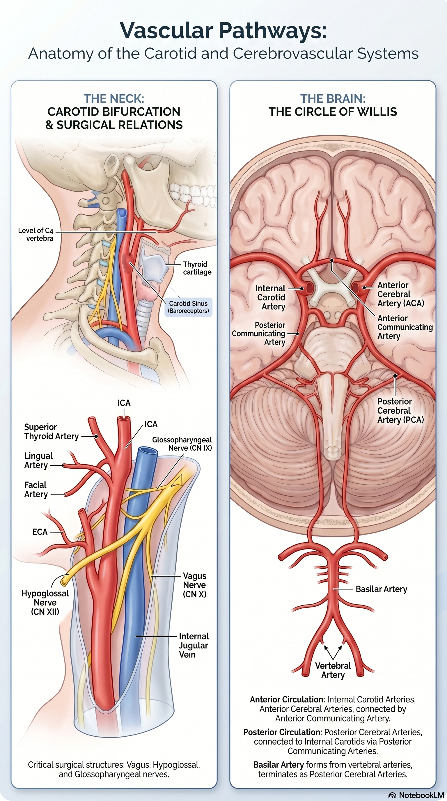

Carotid endarterectomy (CEA) is one of the most evidence-based operations in vascular surgery. Understanding the anatomy of the carotid bifurcation, the cranial nerves at risk, and the circle of Willis is essential before stepping into a CEA.

The Carotid System
| Vessel | Origin | Course & Key Relations |
|---|---|---|
| Right CCA | Brachiocephalic trunk (behind right sternoclavicular joint) | No branches in neck |
| Left CCA | Aortic arch directly | Longer mediastinal course — higher atherosclerotic risk |
| CCA | As above | Runs in carotid sheath with IJV (lateral) and vagus nerve (posterior). Carotid body at bifurcation. |
| Bifurcation | C3/4 (upper thyroid cartilage level) | Most common site of atherosclerosis; carotid sinus = baroreceptor |
| ICA | CCA bifurcation | Posterolateral initially → enters carotid canal in petrous temporal → cavernous sinus → intracranial. No neck branches (key distinguishing feature from ECA). |
| ECA | CCA bifurcation | Anteromedial. 8 branches (Superior thyroid, Ascending pharyngeal, Lingual, Facial, Occipital, Posterior auricular, Maxillary, Superficial temporal). |
How to Distinguish ICA from ECA Intraoperatively
1. ICA has NO branches in the neck — ECA has branches immediately
2. ICA is posterolateral at origin — ECA is anteromedial
3. ICA is larger at the bifurcation (carotid bulb)
4. Temporal tap test: tap the superficial temporal artery → transmitted pulsation felt in ECA (not ICA)
The ICA has NO branches in the neck. If you see a branch, it's the ECA. This is a classic MCQ. The first ECA branch is the superior thyroid artery.
The Circle of Willis
Anterior circulation (ICA-derived):
ICA → Ophthalmic artery → Anterior choroidal → Posterior communicating (PCoA) → then divides into:
• Anterior cerebral artery (ACA) — connected by anterior communicating (ACoA)
• Middle cerebral artery (MCA) — main hemisphere supply; most common stroke territory
Posterior circulation (vertebrobasilar):
Vertebral arteries → Basilar artery → Posterior cerebral arteries (PCA) → connected to ICA via PCoA
During CEA, cross-clamping the ICA temporarily occludes ipsilateral MCA territory. Collateral flow via ACoA (contralateral ICA) and PCoA (posterior circulation) determines tolerance. This guides shunting decisions — stump pressure <50 mmHg = shunt.
Cranial Nerves at Risk in CEA
| Nerve | Location | Injury consequence | Incidence |
|---|---|---|---|
| Vagus (X) | Posterior in carotid sheath | Hoarseness (RLN), aspiration | ~1% |
| Hypoglossal (XII) | Crosses ICA/ECA at upper dissection | Tongue deviation to ipsilateral side; dysarthria | ~3–5% |
| Marginal mandibular (VII) | Crosses at angle of mandible | Drooping of ipsilateral corner of mouth | <1% |
| Ansa cervicalis | Anterior to CCA, crosses field | Minor — strap muscle weakness; often divided deliberately | Common |
| Superior laryngeal (X branch) | Deep to ECA at its origin | Loss of high-pitched phonation; cricothyroid weakness | ~1% |
| Greater auricular | Crossing SCM posteriorly | Numbness around ear/jaw — often unavoidable | Common |
The Carotid Sheath
The carotid sheath is a condensation of deep cervical fascia enclosing three structures:
• CCA — anteromedial
• IJV — posterolateral (and larger on the right)
• Vagus nerve (CN X) — posterior, between artery and vein
Medial to the sheath: thyroid, trachea, oesophagus, recurrent laryngeal nerve.
Posterior: sympathetic chain (injury → Horner's: ptosis, miosis, anhidrosis, enophthalmos).
The numbers that come up in CEA indications, risk calculations, and MRCS MCQs.
Stenosis Measurement — NASCET vs ECST
NASCET (North American Symptomatic Carotid Endarterectomy Trial): stenosis % = (1 − minimal residual lumen / distal normal ICA) × 100
ECST (European Carotid Surgery Trial): stenosis % = (1 − minimal residual lumen / estimated original lumen at stenosis) × 100
ECST 80% ≈ NASCET 60% — ECST gives higher numbers. UK/international guidelines use NASCET.
ECST and NASCET measure the same stenosis but give different percentages. An ECST 70% stenosis is only ~50% by NASCET. Always clarify which method. Current practice and all guidelines use NASCET.
CEA Indications — The Key Thresholds
| Group | Stenosis (NASCET) | Recommendation | NNT |
|---|---|---|---|
| Symptomatic (TIA/stroke ≤6 months) | ≥70% | CEA — strong benefit Operate | 6 |
| Symptomatic | 50–69% | CEA — moderate benefit (especially male, recent symptom) Consider | 15 |
| Symptomatic | <50% | Medical management only No surgery | Harm |
| Asymptomatic | ≥60–70% | CEA in selected patients (low operative risk, long life expectancy) Selected | ~83 over 5 years |
Timing of CEA After Stroke/TIA
• After TIA or minor stroke: within 2 weeks (ideally within 48–72 hours if ABCD² score high)
• The highest stroke risk is in the first 72 hours after TIA — early CEA is protective
• After major stroke (disabling): wait 4–6 weeks (risk of haemorrhagic transformation)
• Crescendo TIA / stroke-in-evolution: urgent CEA within 24 hours
"Time is brain" — the old practice of waiting 6 weeks after TIA before CEA is obsolete. NICE and ESVS recommend <2 weeks, and centres now aim for <48 hours in eligible patients.
Perioperative Stroke Risk
CEA is only beneficial if operative stroke/death risk is below:
• Symptomatic patients: <6% (30-day stroke/death)
• Asymptomatic patients: <3%
High-risk features: contralateral ICA occlusion, tandem intracranial stenosis, cardiac comorbidity, recent stroke
CEA anatomy step by step — what you'll see and do.
Carotid Endarterectomy — Operative Steps
Position: Supine, head ring, neck extended and rotated away, shoulder roll. Arms tucked.
Incision: Along anterior border of SCM from mastoid to just above clavicle. Centred on bifurcation (angle of jaw = approx. C3/4).
Dissection layers: Skin → platysma (preserve) → investing fascia → retract SCM laterally → IJV encountered → carotid sheath opened medial to IJV
Exposure sequence: CCA first (proximal control) → bifurcation → ECA → ICA (distal control beyond plaque). Heparinise before clamping.
Shunting Decision
Routine shunting: Some centres shunt everyone — simplest approach.
Selective shunting based on:
• Stump pressure <50 mmHg (internal carotid back pressure after clamping)
• Awake monitoring (local anaesthetic CEA — patient speaks during clamping; neurological change = shunt)
• TCD/EEG changes under GA
Local anaesthetic CEA ("awake CEA") is the gold standard for monitoring cerebral perfusion. The patient counting or answering questions provides real-time neurological feedback. Becoming more common in high-volume centres.
Arteriotomy & Endarterectomy
Arteriotomy: longitudinal on anterolateral wall of CCA, extended through bifurcation into ICA (avoiding ECA unless plaque extends there).
Plane: within the media — between inner and outer media layers. Plaque lifts as a cast. Use Watson-Cheyne dissector to develop plane circumferentially.
Distal endpoint: ICA intima must feather smoothly — if raised flap, place tacking sutures (6/0 Prolene) to prevent dissection.
Closure: Patch angioplasty (vein or Dacron/bovine pericardium) reduces restenosis risk and is preferred over primary closure in most guidelines.
Eversion CEA
ICA transected at origin → everted over itself → plaque removed from inside out → re-anastomosed.
Advantages: No patch needed; shorter clamp time; easier to lengthen kinked ICA.
Disadvantage: Harder to inspect distal endpoint; not suitable for high bifurcation.
Carotid Artery Stenting (CAS)
CEA preferred: Symptomatic stenosis ≥70%, age <70, anatomically suitable (low bifurcation)
CAS preferred/considered: High surgical risk (contralateral RLN palsy, prior neck irradiation, hostile neck, severe cardiac disease), age >70 (peri-procedural stroke risk may be lower with CEA in elderly)
CREST trial: CAS associated with higher peri-procedural stroke; CEA higher MI risk. Overall equivalent long-term outcomes in low-risk patients.
Click each card to reveal the answer.
One best answer per question.